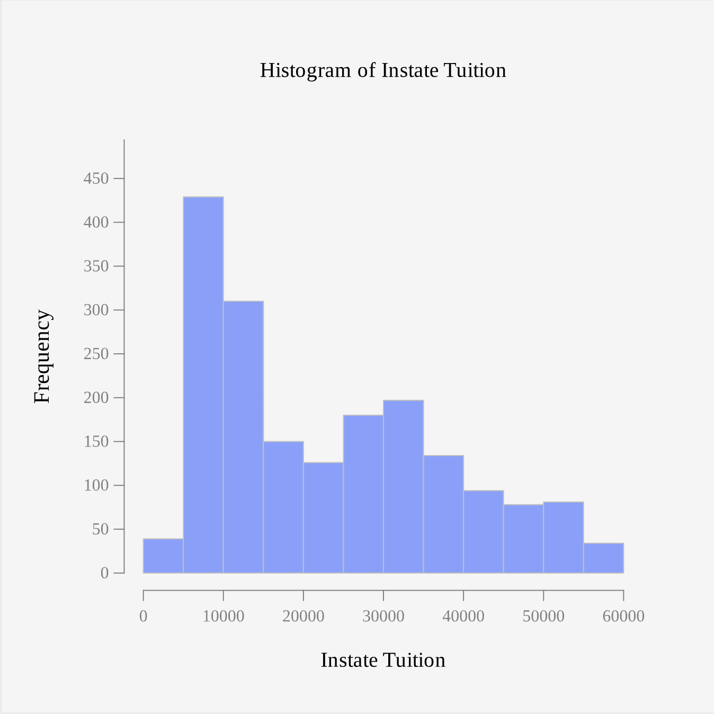
7 Sampling Distributions and the Central Limit Theorem
7.1 Sampling Distribution of the Mean
Earlier chapters treated a sample as a single snapshot of a population, one sample mean calculated once and reported. But if a different random sample were drawn from the same population, a different sample mean would very likely result. This raises an important question: how much does the sample mean vary from sample to sample, and what pattern does that variation follow? Answering this question is the foundation for nearly every method of statistical inference used in the remainder of this course.
Imagine that a beverage company wants to determine the average fill weight of bottles coming off one of its production lines. Weighing every bottle produced would be expensive and impractical, so a quality control inspector randomly selects 40 bottles and weighs each one. Suppose the sample mean fill weight turns out to be \(\bar{x} = 499.2\) mL.
Now suppose a different random sample of 40 bottles is selected. This new sample might have a mean of \(\bar{x} = 500.6\) mL, or a third sample might give \(\bar{x} = 498.9\) mL. Because different random samples produce different values of \(\bar{x}\), the sample mean is a random variable. If this process, drawing a sample and computing its mean, is repeated over and over, the collection of all those sample means forms its own distribution, called the sampling distribution of the sample mean.
Two properties of this distribution are developed in this section: how the sample mean behaves as sample size grows, described by the Law of Large Numbers, and what shape the sampling distribution takes, described by the Central Limit Theorem. As the Central Limit Theorem is developed, it matters a great deal whether the underlying population itself is normally distributed or not, so both cases are considered directly.
7.1.1 The Law of Large Numbers
Intuitively, a larger sample should give a more reliable estimate of the population mean than a smaller sample does. This intuition is formalized by the Law of Large Numbers: as the sample size \(n\) increases, the sample mean \(\bar{x}\) tends to get closer to the true population mean \(\mu\). In other words, the larger the sample, the less the sample mean is expected to differ from the population mean purely due to chance.
For example, suppose the true mean amount customers spend per visit at a coffee chain, across every customer at every location, is \(\mu = \$6.50\). With a sample of \(n = 5\) customers, the sample mean might be $5.10 in one sample and $8.20 in another, swinging widely from sample to sample. With a sample of \(n = 50\) customers, the sample means cluster more tightly, most falling between $6.00 and $7.00. With a sample of \(n = 500\) customers, the sample means cluster even more tightly around $6.50, rarely straying far from the true population mean. This pattern, sample means clustering closer to \(\mu\) as \(n\) grows, is the Law of Large Numbers in action. It does not guarantee that any single sample mean will be close to \(\mu\), but it does mean that larger samples are systematically more trustworthy than smaller ones, whether or not the population itself is normally distributed.
7.1.2 Describing the Sampling Distribution of the Sample Mean
The sampling distribution of the sample mean is the probability distribution of all possible values of \(\bar{x}\) that could occur from repeated random samples of the same size taken from the population. This distribution describes how the sample mean varies from one sample to another and helps us assess how accurately a sample mean estimates the true population mean.
If \(\mu\) and \(\sigma\) denote the true population mean and standard deviation, then the sampling distribution of \(\bar{x}\) has the following properties:
\[\text{Mean:} \quad \mu_{\bar{x}} = \mu\]
and
\[\text{Standard Deviation:} \quad \sigma_{\bar{x}} = \frac{\sigma}{\sqrt{n}}.\]
The standard deviation is often called the standard error of \(\bar{x}\), since it measures how much we expect \(\bar{x}\) to vary from sample to sample.
The sample mean has two paths to a normal sampling distribution:
- If the population samples are drawn from is normally distributed, the sampling distribution of \(\bar{x}\) is normal for every sample size \(n\), including very small samples.
- If the population is not normally distributed, the sampling distribution of \(\bar{x}\) is approximately normal, provided the sample size is sufficiently large. As a rule of thumb, \(n \ge 30\) is considered large enough, although a smaller \(n\) may be sufficient if the population is only mildly skewed, and a larger \(n\) may be needed if the population is heavily skewed or contains extreme outliers.
This second result is the Central Limit Theorem: when the sample size is sufficiently large, the sampling distribution of \(\bar{x}\) is approximately normal, whatever the shape of the underlying population distribution.
Under either path, once normality is established,
\[\bar{x} \sim N\left(\mu, \ \frac{\sigma}{\sqrt{n}}\right)\]
Example 7.1 (Describe the Sampling Distribution: A Non-Normal Population) A beverage company’s records show that the fill weights of bottles at one plant have a mean of \(\mu = 500\) mL and a standard deviation of \(\sigma = 4\) mL, but the distribution of fill weights is right skewed rather than normal. Suppose a quality control inspector randomly selects samples of \(n = 40\) bottles. Describe the sampling distribution of the sample mean fill weight.
Example 7.2 (Describe the Sampling Distribution: A Normal Population) Systolic blood pressure for adult patients at a clinic is approximately normally distributed with a mean of \(\mu = 120\) mmHg and a standard deviation of \(\sigma = 15\) mmHg. Each morning, a nurse records the blood pressure of a random sample of \(n = 9\) patients. Describe the sampling distribution of the sample mean blood pressure.
The distinction between these two cases can feel difficult to understand until it is seen visually. Rguroo’s simulation tools make it possible to draw thousands of random samples from a population in seconds and directly observe how the distribution of sample means behaves, both when the population is already normal and when it is not.
Example 7.3 (Simulating the Sampling Distribution of the Mean from a Normal Population) Suppose a population of adult resting heart rates, in beats per minute, is approximately normally distributed with \(\mu = 70\) and \(\sigma = 10\). Use Rguroo to simulate the sampling distribution of the sample mean heart rate for samples of size \(n = 5\), \(n = 30,\) and \(n = 100,\) and observe what happens to the shape and spread of the sampling distribution.
Tip🔎 Solution
Note Rguroo Steps: Simulating Sampling Distribution of the Mean from a Normal Population
Rguroo Steps: Simulating Sampling Distribution of the Mean from a Normal Population
- Open the Probability-Simulation toolbox on the left-hand side of the Rguroo window.
- Open the Probability dropdown, and select Multiple Distribution Generator.
- Click the plus icon and name the variable, for example heart_rate.
- From the distribution dropdown, select Normal, and enter the mean, 70, and standard deviation, 10.
- In the Sample Size box, enter 5. In the Replications box, enter 1000. Enter a Seed value so the simulation can be reproduced.
- From the Statistic dropdown, select Mean.
- Click the preview icon
 to view the simulated samples.
to view the simulated samples. - Type a name such as hr_means_n5 in the Save Dataset As textbox, and click Save Dataset As.
- Repeat steps 3 through 8 twice more, using Sample Size 30 and 100, saving the results as hr_means_n30 and hr_means_n100.
- For each saved dataset, open the Plots for Numerical Data toolbox and create a Histogram to display the shape of the sampling distribution of the sample mean.
TipClick here to see the Rguroo dialog
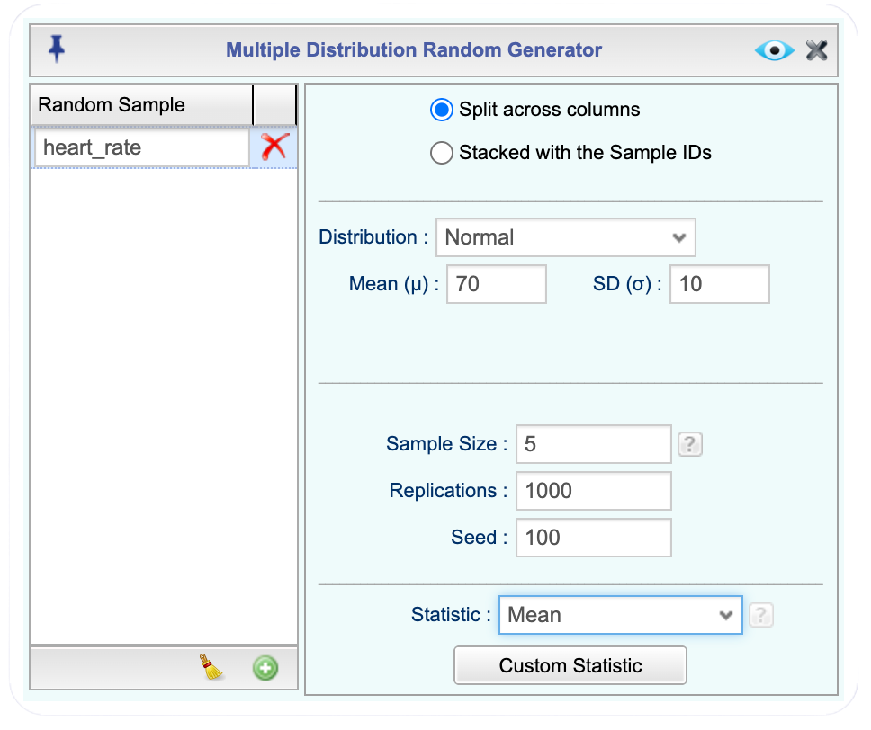
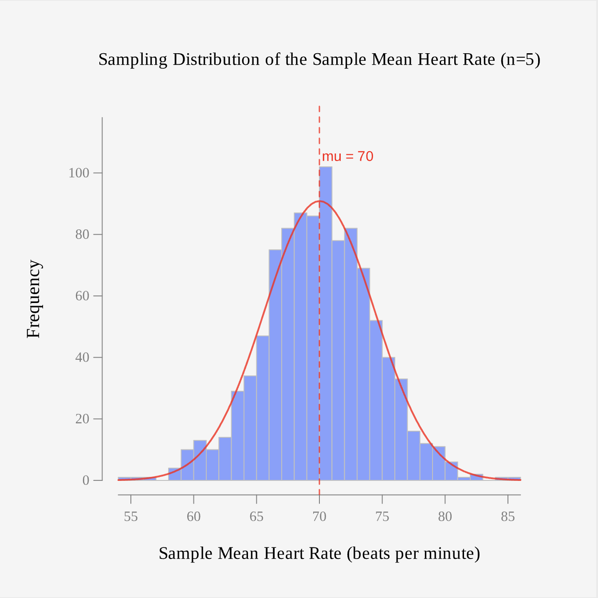
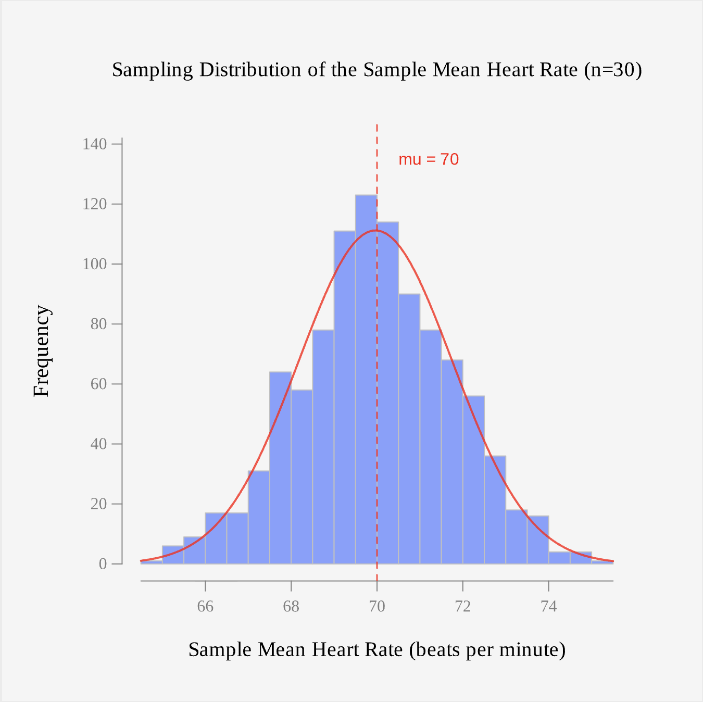
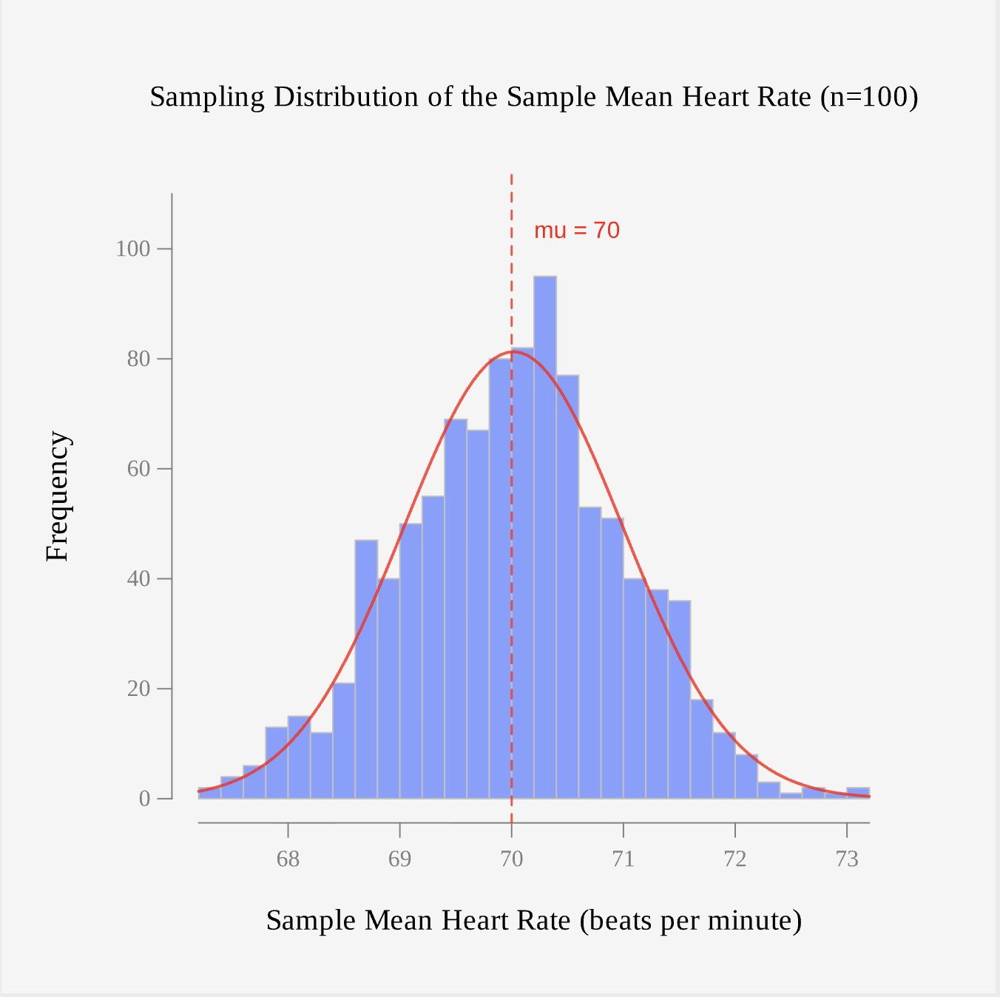
Where the Central Limit Theorem really shines is when we are sampling from a skewed population as in the next example.
Example 7.4 (Simulating the Sampling Distribution of the Mean from a Skewed Population) In-state tuition at four-year colleges and universities is right skewed: most institutions charge less than $20,000 per year, but a smaller number of expensive private institutions charge much more, pulling the tail of the distribution out to the right. The Tuition_4_Year dataset contains in-state tuition for a large collection of four-year institutions in the INSTATE_TUITION variable.
Because this is real, finite data rather than a theoretical distribution, we treat the full Tuition_4_Year dataset as the population and repeatedly draw random samples directly from it, rather than generating data from a fitted distribution. Use Rguroo to simulate the sampling distribution of the sample mean in-state tuition for samples of size \(n = 5\), \(n = 30,\) and \(n = 100,\) and observe how the Central Limit Theorem applies.
Tip🔎 Solution
First, let’s start by looking at the histogram of the dataset to confirm it is skewed.
As expected, the histogram confirms that the population is right skewed, with a long tail extending to $60,000. It is also bimodal, with peaks near $5,000–$10,000 and $30,000–$35,000, likely reflecting the mix of public and private institutions. Because this population is far from normal, it makes a good test case for the Central Limit Theorem.
Note Rguroo Steps: Simulating from a Skewed Population
- Open the Probability-Simulation toolbox on the left-hand side of the Rguroo window.
- Open the Probability dropdown, and select Random Selection. This opens the Dataset Random Selection dialog.
- Select Tuition_4_Year from the Dataset dropdown.
- In the Sample Size box, enter 5. In the Replications box, enter 1000. Enter a Seed value so the simulation can be reproduced.
- Select With replacement, since we are treating the data frame as the population and sampling repeatedly from it.
- Enter 5 in the columns subset since the INSTATE_TUITION is in the fifth column.
- Click the preview icon to view the selected samples.
- Click the Statistic button at the top right of the application. This opens the Custom Statistic dialog.
- Click the plus icon and name the new variable, for example sample_mean. In the code panel, type mean(INSTATE_TUITION) so that Rguroo computes the sample mean of INSTATE_TUITION for each of the 1000 samples. Click the preview icon to check the result.
- Type a name such as tuition_means_n5 in the Save Dataset As textbox, and click Save Dataset As.
- Repeat steps 3 through 10 twice more, using Sample Size 30 and 100, saving the results as tuition_means_n30 and tuition_means_n100.
- For each saved dataset, open the Plots for Numerical Data toolbox and create a Histogram of sample_mean to display the shape of the sampling distribution of the sample mean.
TipClick here to see the Dataset Random Selection and Custom Statistic dialog
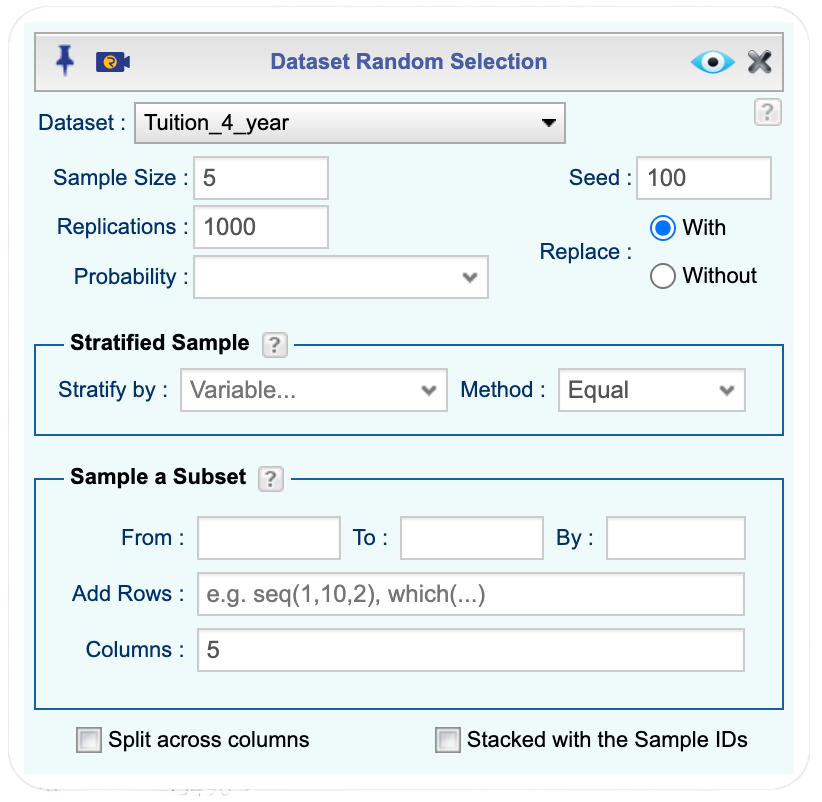
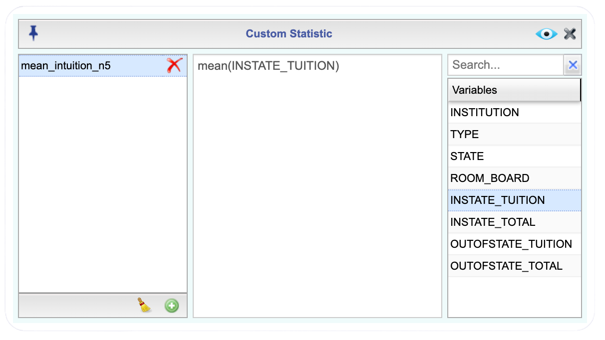


In the heart rate simulation, the histogram of sample means is bell-shaped and centered at 70 for every sample size, \(n = 5\), \(30\), and \(100\). Only the spread changes: the histogram gets narrower as \(n\) increases, consistent with \(\sigma_{\bar{x}} = \sigma/\sqrt{n}\).
In the tuition simulation, the histogram of sample means at \(n = 5\) is still noticeably right skewed, resembling the shape of the original INSTATE_TUITION population. At \(n = 30\), the histogram looks much closer to a symmetric, bell-shaped normal distribution, and at \(n = 100\) it is even more tightly clustered around the population mean.
When the population is already normal, the sampling distribution of \(\bar{x}\) is normal from the very first sample size, and increasing \(n\) only tightens the spread. When the population is not normal, the sampling distribution of \(\bar{x}\) starts out resembling the population’s shape and only becomes approximately normal once \(n\) is large enough, exactly as the Central Limit Theorem predicts.
7.1.3 Calculating Probabilities of the Sample Mean
With the shape, center, and spread of the sampling distribution pinned down, a natural next step is to ask how likely a particular sample mean is to occur. A hospital administrator might want to know how often a sample mean length of stay would exceed six hours; a clinic might want to know how often a sample mean blood pressure would fall in a safe range. Questions like these, phrased in terms of “greater than,” “less than,” or “between,” can be answered directly using the normal model for \(\bar{x}\) developed in this section. The same reasoning carries forward into the rest of this chapter. It also becomes the basis for inference about population mean in later chapters.
Example 7.5 (Calculating Probabilities: A Normal Population) Recall the systolic blood pressure example: blood pressure for adult patients at a clinic is approximately normally distributed with \(\mu = 120\) mmHg and \(\sigma = 15\) mmHg, and a nurse records the blood pressure of a random sample of \(n = 9\) patients each morning.
a. What is the probability that a given morning’s sample mean blood pressure is between 115 and 125 mmHg?
b. What is the probability that a given morning’s sample mean blood pressure is at least 130 mmHg?
c. Only the highest 5% of sample mean blood pressures on record are flagged for follow-up. What sample mean blood pressure marks the cutoff for this top 5%?
Tip🔎 Solution
Recall from Example 7.2 that because the population is already normal, no minimum sample size is required, and
\[\text{Mean:} \quad \mu_{\bar{x}} = 120 \text{ mmHg} \qquad \text{Standard Error:} \quad \sigma_{\bar{x}} = \dfrac{15}{\sqrt{9}} = 5 \text{ mmHg}\]
That is, \(\bar{x} \sim N(120,5)\).
a. We want to find \(P(115 < \bar{x} < 125)\). Click to expand the box below to see how to calculate the probability.
Note Finding Probabilities in Rguroo
- Open the Probability-Simulation toolbox in Rguroo.
- Open the Probability dropdown, and select Probability Calculator and Continuous. This opens the Continuous Probability dialog.
- Since we were given the values and want the probability, select Values \(\Rightarrow\) Probability.
- Select Normal from the Distribution dropdown, since we verified that the distribution was approximately normal.
- Enter the mean, 120, and standard deviation, 5.
- Select between in the dropdown menu and enter 115 and 125 in the two boxes
- Click the preview icon to see a preview of the barplot.
TipClick here to see the Rguroo dialog
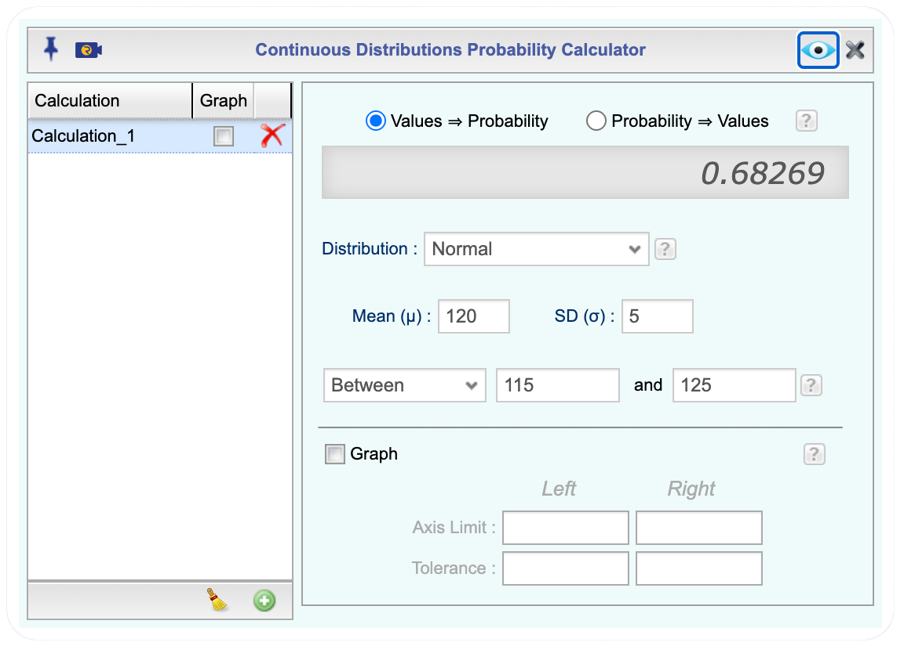
So \(P(115 < \bar{x} < 125) = 0.6827\). This means there is about a 68.27% chance that a given morning’s sample of 9 patients will have a mean blood pressure betweem 115 mmHg and 124 mmHg.
b. We want to find \(P(\bar{x} \ge 130)\). The mean and standard error have not changed, so select Above and enter 130 in the Continuous Probability Calculator.
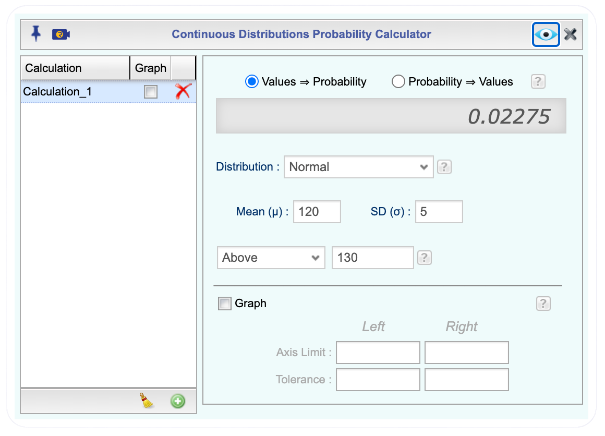
So \(P(\bar{x} \ge 130) = 0.0228\). There is about a 2.28% chance that a given morning’s sample of 9 patients will have a mean blood pressure of 130 mmHg or higher.
c. This time we are given a probability, 0.05, and asked to find the sample mean it corresponds to, so we work in the opposite direction from parts (a) and (b). In the Continuous Probability dialog, switch the radio button at the top from Values \(\Rightarrow\) Probability to Probability \(\Rightarrow\) Values. The mean, 120, and standard deviation, 5, stay the same. Select Above in the dropdown menu, since we want the value that only the top 5% of sample means exceed, and enter the probability, 0.05, in the box. Click the preview icon to see the value.
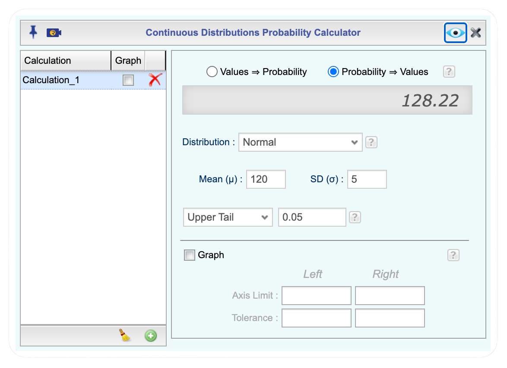
So \(\bar{x} = 128.22\) mmHg. A sample mean blood pressure of 128.22 mmHg or higher would place a given morning’s sample in the top 5% of all sample mean blood pressures, and would be flagged for follow-up.
Example 7.6 (Calculating Probabilities: A Non-Normal Population) Reaction times, in milliseconds, for a population of adults on a simple visual task are known to be right skewed rather than normal. This population has a mean of \(\mu = 250\) ms and a standard deviation of \(\sigma = 40\) ms. A researcher plans to test a random sample of \(n = 64\) participants.
a. Describe the sampling distribution of the sample mean reaction time.
b. What is the probability that the sample mean reaction time is greater than 260 ms?
c. Researchers want to invite back participants for further testing that have the fastest 10% of sample mean reaction times. What sample mean reaction time marks this cutoff?
7.1.4 Homework for Section 7.1
A classmate says, “As the sample size gets larger, the sampling distribution of the sample mean gets closer to normal.” Explain what is incorrect about this statement, and rewrite it so that it correctly distinguishes between what the Law of Large Numbers guarantees and what the Central Limit Theorem guarantees.
For each scenario, state whether the sampling distribution of the sample mean is exactly normal, approximately normal, or cannot be determined without more information. Explain your reasoning in each case.
a . A population is known to be normally distributed, and a random sample of \(n = 12\) is selected.
b . A population is heavily right skewed, and a random sample of \(n = 18\) is selected.
c . A population is heavily right skewed, and a random sample of \(n = 50\) is selected.
d . The shape of a population is unknown, and a random sample of \(n = 8\) is selected.
IQ scores for adults are approximately normally distributed with a mean of \(\mu = 100\) and a standard deviation of \(\sigma = 15\). A researcher plans to test a random sample of \(n = 16\) adults. Describe the sampling distribution of the sample mean IQ score.
Call durations at a customer service center are right skewed, with a mean of \(\mu = 8\) minutes and a standard deviation of \(\sigma = 3\) minutes. A supervisor plans to review a random sample of \(n = 45\) calls. Describe the sampling distribution of the sample mean call duration.
Case processing times in a county court system are approximately normally distributed with a mean of \(\mu = 45\) days and a standard deviation of \(\sigma = 6\) days. A court administrator selects a random sample of \(n = 25\) cases.
a . Describe the sampling distribution of the sample mean processing time.
b . What is the probability that the sample mean processing time is between 42 and 48 days?
Using the customer service center from Exercise 4 (\(\mu = 8\) minutes, \(\sigma = 3\) minutes, right skewed), a random sample of \(n = 45\) calls is selected. What is the probability that the sample mean call duration exceeds 9 minutes?
Finish times for a local 5K race are right skewed, with a mean of \(\mu = 32\) minutes and a standard deviation of \(\sigma = 6\) minutes. A race organizer selects a random sample of \(n = 36\) runners.
a . Describe the sampling distribution of the sample mean finish time.
b . What is the probability that the sample mean finish time is less than 30 minutes?
Total cholesterol levels for adults are approximately normally distributed with a mean of \(\mu = 190\) mg/dL and a standard deviation of \(\sigma = 20\) mg/dL. A clinic monitors random samples of \(n = 10\) patients. Patients whose sample mean cholesterol falls in the lowest 15% of all possible sample means are flagged as a low-risk group. What sample mean cholesterol level marks this cutoff?
Final exam scores in a large introductory course are right skewed, with a mean of \(\mu = 72\) and a standard deviation of \(\sigma = 8\). An instructor selects a random sample of \(n = 40\) exams to audit. Only the top 5% of all possible sample mean scores would be flagged for a grading review. What sample mean score marks this cutoff?
7.2 Sampling Distribution of the Sample Proportion
Imagine that a university wants to determine the proportion of its students who prefer online courses. Surveying every student would be expensive and time-consuming, so the university randomly selects 100 students and asks whether they prefer online courses. Suppose 62 of the 100 students respond “yes.”
To describe this result, we use the sample proportion, which is the proportion of individuals in a sample who possess the characteristic of interest. The sample proportion is denoted by the symbol \(\hat{p}\) (pronounced “p-hat”) and is calculated as
\[\hat{p}=\frac{x}{n}\] where
\(x =\) the number of individuals in the sample with the characteristic of interest, and
\(n =\) the sample size
For the university survey,
\[\hat{p}=\frac{62}{100}=0.62\]
This means that 62% of the students in the sample prefer online courses.
Now suppose a different random sample of 100 students is selected. The new sample might contain 58 students who prefer online courses, giving \(\hat{p}=0.58\), or 65 students, giving \(\hat{p}=0.65\). Because different random samples produce different values of \(\hat{p}\), the sample proportion is a random variable.
7.2.1 Describing the Sampling Distribution of the Sample Proportion
The sampling distribution of the sample proportion is the probability distribution of all possible values of \(\hat{p}\) that could occur from repeated random samples of the same size taken from the population. This distribution describes how the sample proportion varies from one sample to another and helps us assess how accurately a sample proportion estimates the true population proportion.
If \(p\) denotes the true population proportion, then the sampling distribution of \(\hat{p}\) has the following properties:
\[\text{Mean:} \quad \mu_{\hat{p}} = p\]
and
\[\text{Standard Deviation:} \quad \sigma_{\hat{p}} = \sqrt{\frac{p(1-p)}{n}}.\] The standard deviation is often called the standard error of \(\hat{p}\), since it measures how much we expect \(\hat{p}\) to vary from sample to sample.
When the sample size is sufficiently large, the sampling distribution of \(\hat{p}\) is approximately normal provided that
\[ np \ge 10 \qquad \text{and} \qquad n(1-p) \ge 10. \]
Under these conditions,
\[\hat{p} \sim N\left(p,\sqrt{\frac{p(1-p)}{n}}\right)\]
This normal approximation makes it possible to construct confidence intervals and perform hypothesis tests about population proportions, which we will learn about in in the next few chapters. This makes the sampling distribution of the sample proportion a fundamental concept in statistical inference.
Example 7.7 (Desribe the Sampling Distribution) A large online retailer wants to estimate the proportion of customers who are satisfied with their shopping experience. Company records show that approximately 70% of all customers are satisfied. Instead of surveying every customer, the retailer randomly selects 100 customers and records whether each customer is satisfied or not. Describe the sampling distribution of the sample proportion.
7.2.2 Calculating Probabilities of the Sample Proportion
Once we have established that the sampling distribution of a sample proportion \(\hat{p}\) is approximately normal, we can use the distribution to answer probability questions about sample outcomes.
Continuing with our customer satisfaction survey example, recall that the population proportion of satisfied customers is \(p=0.70\), and we are taking random samples of \(n=100\) customers. Now that we know the sampling distribtuion for \(\hat{p}\), we can answer probability questions about the sample proportion.
For example, suppose the company wanted to know
- What is the probability that a random sample of 100 customers will contain at least 75% satisfied customers?
- What is the probability that a random sample of 100 customers will contain at most 65% satisfied customers?
- What is the probability that a random sample of 100 customers will contain between 50% and 80% satisfied customers?
The sampling distribution of the sample proportion allows us to answer these types of questions. Thus, the sampling distribution of the sample proportion not only describes the behavior of sample proportions across repeated samples, but also allows us to quantify the likelihood of observing particular sample results. This forms the basis for confidence intervals, hypothesis testing, and many other statistical inference procedures in later chapters.
Example 7.8 (Calculating Probabilities) Consider a university where 45% of all students participate in at least one extracurricular club. Suppose the university randomly selects samples of 150 students and records the proportion of students in each sample who participate in a club.
a. Describe the sampling distribution of \(\hat{p}\).
b. What is the probability that at least 52 students participate in extracurricular clubs?
Tip🔎 Solution
a. As in the previous example, to describe the sampling distribution of \(\hat{p}\), we need to check that the two conditions are met and then find the mean and standard deviation. In this case, \(p=0.44\) and \(n=150\).
\(\text{Check Conditions:} \quad np \ge 10 \quad \text{and} \quad n(1-p) \ge 10\)
\((150)(0.45)=67.5 \ge 10 \quad \text{and} \quad (150)(1-0.45)=(150)(0.55)=82.5 \ge 10\)
The conditions are satisfied.
Next,
\(\text{Mean:} \quad \mu_{\hat{p}} = 0.45\)
\(\text{Standard Deviation:} \quad \sigma_{\hat{p}} = \sqrt{\frac{(0.45)(1-0.45)}{150}} = 0.0406\)
b. We want to find the probability that at least 52 out of 150 students participate in extracurricular activities. Since we are finidng a probability using the sampling distribution of the sample proportion, we need to find the sample proportion, \(\hat{p}\).
Recall that \(\hat{p}=\frac{x}{n}.\) In this case, \(\hat{p}=\frac{52}{150}=0.35\).
Since the question states at least 52, we will be finidng \(P(x \ge 52)=P(\hat{p} \ge 0.35)\). To find the probability, we will use Rguroo.
Click to expand the box below see how to calculate the probability.
Note Finding Probabilities in Rguroo
- Open the Probability-Simulation toolbox in Rguroo.
- Open the Probability dropdown, and select Probability Calculator and Continuous. This opens the Continuous Probability dialog.
- Since we were given the values and want the probability, select Values \(\Rightarrow\) Probability.
- Select Normal, since we verified that the distribution was approximately normal.
- Enter the mean, 0.40, and standard deviation, 0.0406.
- Next, select Above in the dropdown menu since it is greater than and enter \(\hat{p}\), \(\frac{52}{150}\) in the box. Note: We enter the fraction since our decimal value is rounded above and we want to be as precise as possible
- Click the preview icon to see a preview of the barplot.
TipClick here to see the Rguroo dialog
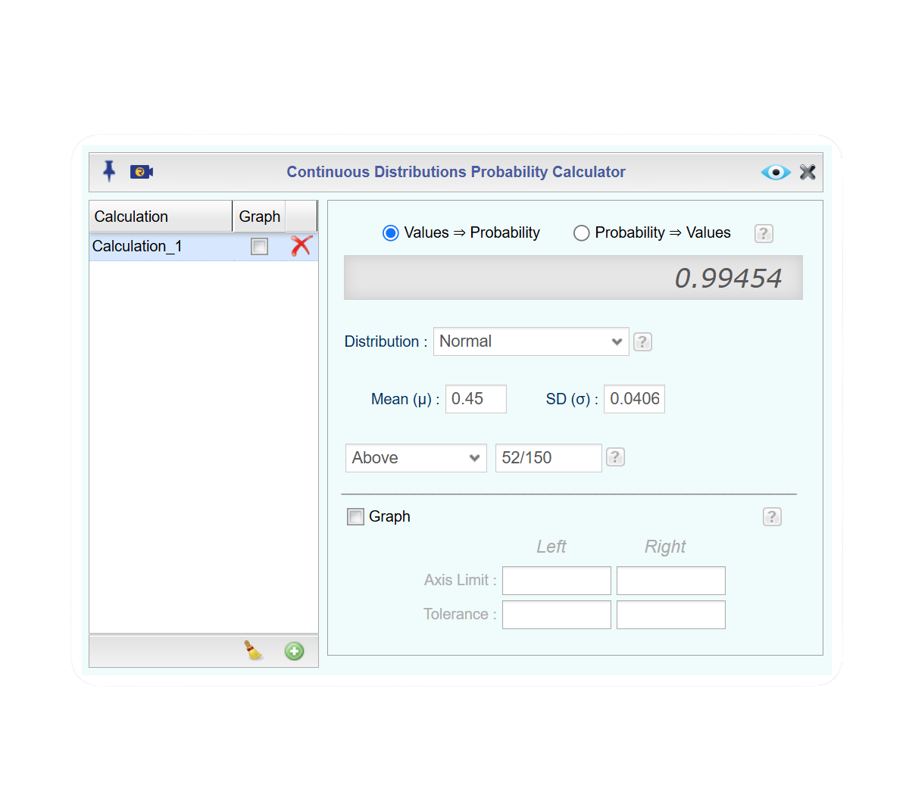
So \(P(x \ge 52) = P(\hat{p} \ge \frac{52}{150}) = 0.9945\)
Example 7.9 (Calculating Probabilities) Suppose a school district is proposing a bond measure that would raise property taxes to fund the construction of two new elementary schools and renovate aging classrooms. Before the election, a polling organization conducts research and finds that approximately 52% of registered voters support the measure.
To gauge public opinion leading up to the election, the polling organization repeatedly selects random samples of 200 registered voters and records the proportion in each sample who say they support the bond measure.
a. Describe the sampling distribution of \(\hat{p}\).
b. What is the probability that less than 125 registered voters support the measure?
c. What is the probability that between 92 and 135 registered voters support the measure?
d. The bond measure needs at least 55% of registered voters to support the measure to pass. What is the probability that the bond measure will pass?
7.2.3 Homework for Section 7.1
A community college surveys 120 students about whether they plan to transfer to a four-year university. Of the 120 students surveyed, 78 say they plan to transfer. Calculate \(\hat{p}\) and interpret in the context of this problem.
For each scenario, state whether the sampling distribution of the sample proportion is exactly normal, approximately normal, or cannot be determined without more information. Explain your reasoning in each case.
a. A population is known to be normally dstributed and the population proportion is \(p=0.40\). Random samples of size \(n=20\) are selected.
b. In a town, 35% of residents recycle regularly. A random sample of \(n=120\) residents is selected.
c. The proportion of households that own a smart thermostat is unknown. A random sample of \(n=75\) households is selected.
d. A state health department reports that 22% of adults smoke. A random sample of \(n=250\) adults is selected.
A city transportation department knows that 40% of residents regularly use public transportation. A random sample of \(n=200\) residents is selected. Describe the sampling distribution of the sample proportion of people who use public transportation.
A health organization reports that 65% of adults receive an annual flu vaccine. Random samples of 150 adults are selected. Describe the sampling distribution of the sample proportion of adults who receive an annual flu vaccine.
A university knows that 55% of its students own a tablet computer. Random samples of 180 students are selected.
a. Describe the sampling distribution of \(\hat{p}\).
b. Find the probability that more than 60% of the sampled students own a tablet computer.
A manufacturing company estimates that 8% of its products are returned by customers. Random samples of 300 products are selected.
a. Describe the sampling distribution of \(\hat{p}\).
b. Find the probability that fewer than 6% of the sampled products are returned. Is it unusual for less than 6% of its products to be returned?
A streaming service reports that 72% of subscribers watch content on mobile devices. Random samples of 250 subscribers are selected. Find the probability that the sample proportion is between 0.68 and 0.76.
A financial aid office reports that 58% of college students have student loan debt. Random samples of \(n=300\) college students are selected, and the sample proportion \(\hat{p}\) is recorded.
a. What is the probability that more than 63% of the sampled students have student loan debt?
b. What is the probability that between 160 and 190 students in the sample have student loan debt?
c. The financial aid office plans to offer additional loan counseling services if a survey finds that at least 60% of sampled students have student loan debt. What is the probability that a random sample will support offering the additional services?
7.3 Applications of the Central Limit Theorem
In the previous sections, we used sampling distributions to describe how sample means and sample proportions vary from sample to sample. Once the appropriate sampling distribution has been identified, we can use it to answer probability questions about the likelihood of obtaining particular sample results. For sample means, these probabilities are based on the sampling distribution of \(\bar{x}\), while for sample proportions, they are based on the sampling distribution of \(\hat{p}\). In this section, we will practice finding probabilities involving both types of sampling distributions. These exercises will reinforce the process of identifying the correct distribution, calculating probabilities, and interpreting the resulting probabilities in context.
NoteSummary of Sampling Distributions
Sampling Distribution of \(\bar{x}\)
The shape of the distribution is approximately normal if \(n \ge 30.\)
Mean: \(\mu_{\bar{x}}= \mu\)
Standard Deviation: \(\sigma_{\bar{x}}=\frac{\sigma}{\sqrt{n}}\)
Sampling Distribution of \(\hat{p}\)
The shape of the distribution is approximately normal if \(np \ge 10 \quad \text{and} \quad n(1-p) \ge 10\).
Mean: \(\mu_{\hat{p}} = p\)
Standard Deviation: \(\sigma_{\hat{p}} = \sqrt{\frac{p(1-p)}{n}}\)
Example 7.10 (Calculating Probabilities) A bottling company fills soda bottles with a mean volume of 20 ounces and a population standard deviation of 1.2 ounces.
a. Suppose the bottling company knows their bottles have volumes that are approximately normally distributed. If one bottle is selected, what is the probability that the volume is less 19.7 ounces? Interpret the result.
b. Now suppose the bottling company does not know if there bottle volumes follow a normal distribution. If 36 bottels are selected, what is the probability that the mean volume is less than 19.7 ounces? Interpret the result.
c. Because there can be penalties for underfilling bottles and profit loss from overfilling bottles, the bottling machine is shut down for recalibration if the volume is less than 19.5 ounces or more than 20.5 ounces. Suppose the bottling company randomly selects 40 bottles. What is the probability that the machine will be shut down for recalibraition?
Example 7.11 (Calculating Probabilities) A streaming service reports that 72% of its subscribers watch at least one original series each month. A random sample of 150 subscribers is selected.
a. Find the probability no more than 68% of the subscribers watch at least one original series each month. Interpret the results.
b. Find the probability that between 50% and 75% of the subscribers watch at least one original series each month. Interpret the results.
c. Find the probability that at least 100 subscribers watch at least one original series each month. Interpret the results.
7.3.1 Homework for Section 7.3
A university reports that students spend an average of 12 hours per week studying outside of class, with a population standard deviation of 4 hours.
a. What is the probability that the sample mean study time is less than 11 hours? Interpret the result.
b. What is the probability that the sample mean study time is between 11 and 13 hours? Interpret the result.
A hotel chain reports that 82% of guests are satisfied with their stay. A random sample of 200 guests is selected.
a. What is the probability that more than 85% of the sampled guests are satisfied? Interpret the result.
b. What is the probability that between 75% and 85% of the sampled guests are satisfied? Interpret the result.
A survey finds that 28% of households own at least one electric vehicle. Random samples of 250 households are selected.
a. What is the probability that less than 25% of the sampled households own an electric vehicle?
b. What is the probability that between 60 and 80 households in the sample own an electric vehicle?
c. A town plans to install additional charging stations if a survey finds that at least 30% of households own an electric vehicle. What is the probability that a random sample supports the plan?
A shipping company knows that package delivery times have a mean of 3.5 days and a population standard deviation of 1.2 days. Suppose a random sample of 64 deliveries is selected.
a. What is the probability that the sample mean delivery time exceeds 3.8 days?
b. What is the probability that the sample mean delivery time is between 3.3 and 3.7 days?
c. The company investigates its operation whenever the sample mean delivery time exceeds 4 days. What is the probability an investigation is triggered? Would it be unusual to trigger an investigation under these circumstances?
A state education agency reports that students earn an average score of 78% on a standardized mathematics exam. The population standard deviation is 12 percentage points. Suppose a random sample of 60 students are selected.
a. What is the probability that the sample mean exam score is greater than 80%?
b. What is the probability that the sample mean exam score is between 75% and 82%?
c. The agency reviews the exam for possible revisions if the sample mean score is below 74%. What is the probability that a random sample will trigger a review?
A university reports that 64% of its students work at least part-time while attending school. A random sample of 220 students is selected.
a. What is the probability that more than 70% of the sampled students work at least part-time?
b. What is the probability that between 130 and 155 students in the sample work at least part-time?
c. The university plans to expand evening course offerings if a survey finds that at least 68% of sampled students work while attending school. What is the probability that a random sample will support expanding evening courses?